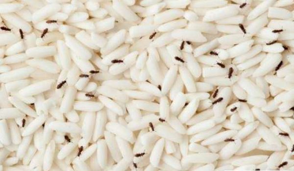
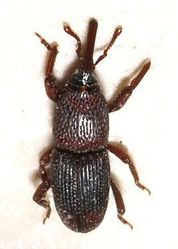
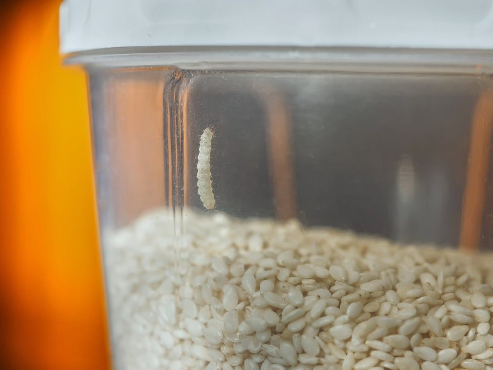

آیا تا به حال با باز کردن کیسه برنج یا حبوبات، با حشرات ریز و سیاهرنگی مواجه شدهاید که در میان دانهها حرکت میکنند؟ آیا متوجه شدهاید که آرد یا ادویههای شما به مرور زمان بوی نامطبوعی گرفته و ظاهر آنها تغییر کرده است؟ اگر پاسخ شما مثبت است، احتمالاً انبار مواد غذایی شما به آفات انباری آلوده شده است؛ موجودات ریزی که میتوانند در سکوت کامل، سرمایه و سلامت شما را به خطر بیندازند.

آفات انباری گروهی از حشرات و جوندگان هستند که به محصولات کشاورزی ذخیرهشده در منازل، انبارها، سیلوها و حتی کشتیهای حملونقل حمله میکنند و با تغذیه از آنها، خسارتهای جبرانناپذیری را چه از نظر کمی و چه از نظر کیفی به مواد غذایی وارد میآورند . این آفات در هر جایی که مواد غذایی خشک مانند غلات، حبوبات، آجیل، خشکبار و حتی ادویهجات نگهداری شوند، میتوانند یافت شوند و در صورت عدم کنترل به موقع، کل انبار شما را آلوده کنند.
در این مقاله جامع از شرکت سمپاشی نانوفناوران بهداشت تهران، شما را با مهمترین آفات انباری، نشانههای تشخیص، روشهای پیشگیری و مهمتر از همه، سمپاشی تخصصی و ریشهکنی اصولی این آفات آشنا خواهیم کرد.
آفات انباری به گروهی از حشرات، کنهها و جوندگان اطلاق میشود که در مراحل مختلف زندگی خود (لاروی و بالغ) به محصولات کشاورزی ذخیرهشده حمله میکنند و از آنها تغذیه مینمایند . این آفات در محیطهای مختلفی از جمله منازل، انبارهای بزرگ، سیلوهای غلات، کشتیهای حملونقل و هواپیماها یافت میشوند .
آفات انباری نهتنها از نظر اقتصادی خسارتهای سنگینی به بار میآورند، بلکه تهدیدی جدی برای سلامت انسان محسوب میشوند:
| نوع خسارت | توضیح |
|---|---|
| خسارت کمی | آفات با تغذیه از مواد غذایی، وزن و حجم آنها را کاهش میدهند و باعث فساد فیزیکی محصول میشوند |
| خسارت کیفی | بسیاری از آفات با ترشح آنزیمها و فضولات خود، باعث تغییر طعم، بو و رنگ مواد غذایی میشوند و آنها را غیرقابل مصرف میکنند |
| خطرات بهداشتی | فضولات، پوستاندازی و اجساد آفات در مواد غذایی میتواند باعث ایجاد انواع حساسیتها، مسمومیتها و بیماریهای گوارشی شود |
| آسیب به بستهبندی | جوندگان با جویدن بستهبندیها، باعث نفوذ حشرات و آلودگی بیشتر میشوند |
| خطر آتشسوزی | جوندگان با جویدن سیمهای برق در انبارها و کارخانجات، خطر آتشسوزی را افزایش میدهند |
در این بخش به معرفی مهمترین آفات انباری که در منازل و انبارهای ایران یافت میشوند میپردازیم:
نام علمی: Sitophilus oryzae
این آفت یکی از مهمترین آفات برنج است که در صورت عدم رعایت نکات انبارداری، میتواند خسارت کامل به برنج وارد کند . شپشک برنج در مراحل لاروی و بلوغ برای برنج خسارتزا بوده و به گندم، جو و ذرت نیز حمله میکند . این حشره دارای سری خرطومی شکل، به رنگ قهوهای تیره و به طول ۳ تا ۵ میلیمتر است و میتواند پرواز کند .

چرخه زندگی: شپشک ماده روزانه ۴ تخم در مغز دانههای غلات میگذارد و در طول عمر خود (حدود ۳۰ روز) میتواند ۳۰۰ تا ۴۰۰ تخم تولید کند . مراحل رشد تا قبل از تبدیل شدن به حشره بالغ، داخل دانه برنج صورت میگیرد؛ به همین دلیل معمولاً تا قبل از ایجاد شپشک بالغ، متوجه وجود این آفت در برنج نمیشوید .
نکته مهم: شپشک برنج یکی از مقاومترین آفات انباری است و میتواند تا ۳۰ روز بدون غذا زنده بماند . به همین دلیل، کنترل آن نیاز به روشهای تخصصی دارد.
این آفت در بین حبوبات و برنج یافت میشود و در مراحل لاروی و کمی در مراحل بلوغ به محصولات انباری خسارت وارد میکند . این حشره در بین مردم به جوجه معروف است و ترجیح غذایی آن حبوبات، برنج، عدس و گندم است. در صورت عدم وجود این محصولات، به غلات دیگر مثل ماکارونی و خشکبار حمله میکند . فضولات این حشره در محصولات انباری میتوانند سبب ایجاد انواع حساسیتها شوند .
نام علمی: Plodia interpunctella
این آفت در منازل و انبارها دیده میشود و مراحل لاروی آن به همه نوع مواد غذایی خشک و نیمهخشک حمله میکند . اگر به این موارد دسترسی نداشته باشد، میتواند از الیاف مختلف از قبیل کاغذ و پارچه تغذیه کند . این حشره پس از بلوغ به شبپره تبدیل میشود و جذب نور شده و در شب آشکار میگردد .
این حشره از دانههای غلات تغذیه میکند و دامنه میزبانی بالایی دارد. مرحله لاروی و بلوغ این آفت به دانههای غلات با نشاسته بالا مثل گندم، ذرت و برنج حمله میکنند . از علائم خسارت این حشره بر روی غلات، سوراخهای متعددی است که در اثر تغذیه آفت به وجود آمده است .
ترجیح غذایی این حشره به پوست خام که دارای پروتئین باشد، لاشه حیوانات، استخوان، دانههای غلات، شفیره کرم ابریشم و موارد مشابه است . این حشره در سال یک نسل و در صورت مناسب بودن شرایط دمایی و محیطی تا دو نسل تولید میکند .
حالت لاروی این حشره میتواند خسارت هنگفتی به فرآوردههای خشک از قبیل خز، منسوجات پشمی، ماهی خشک، پر، پوست، مو و فرش وارد کند . منسوجاتی که به مدت طولانی در کمدها یا انبارها نگهداری شوند و مراقبتی از آنها به عمل نیاید، مورد حمله این آفت قرار میگیرند .
موشها به سبب داشتن دندانهایی که همواره در حال رشد هستند، مجبور به جویدن اجسام مختلف از قبیل محصولات انباری هستند و به این طریق سبب ایجاد خسارت میشوند . فضولات و موی این جانوران سبب کاهش کیفیت محصولات و ایجاد مشکلاتی از قبیل حساسیتها یا بیماریهای متعدد میشود .
تشخیص زودهنگام آلودگی میتواند از گسترش آن به سایر مواد غذایی جلوگیری کند. مهمترین علائم حضور آفات انباری عبارتند از:

پیشگیری همواره بهترین راهکار در مقابله با آفات انباری است. با رعایت این نکات، میتوانید از ورود این آفات به منزل یا انبار خود جلوگیری کنید:
پس از شناسایی آلودگی، میتوانید از روشهای زیر برای کنترل آن استفاده کنید. توجه داشته باشید که این روشها معمولاً برای آلودگیهای محدود مؤثر هستند و در صورت گسترش آلودگی، نیاز به سمپاشی تخصصی خواهید داشت.
بهترین و سریعترین روش، دور انداختن تمام مواد غذایی آلوده است. اگر یک ماده غذایی به آفت آلوده شده است، احتمالاً سایر مواد غذایی مجاور نیز دچار آلودگی شدهاند، حتی اگر علائم ظاهری نداشته باشند.
پس از دور انداختن مواد غذایی آلوده، تمام قفسهها، کابینتها و انبار را با سرکه سفید یا محلول آب و صابون به طور کامل تمیز کنید تا تخمها و لاروهای احتمالی از بین بروند.
تلههای چسبی حاوی فرمون جنسی آفات، میتوانند به جذب حشرات بالغ نر کمک کنند و از تخمگذاری جلوگیری نمایند.
در صورتی که حجم مواد غذایی آلوده کم است، میتوانید برای از بین بردن آفات، از آب جوش استفاده کنید؛ زیرا ریختن آب جوش روی مواد غذایی، سبب کشته شدن حشرات و تخم آنها میشود.
برای برنج و حبوبات، میتوانید از روش الک کردن با پنکه استفاده کنید. در این روش، برنج را از ارتفاع کم در مقابل باد پنکه میریزید تا حشرات سبکوزن جدا شوند و برنج سنگینتر در ظرف باقی بماند.
اگر با وجود رعایت نکات پیشگیرانه و استفاده از روشهای خانگی، همچنان با مشکل آفات انباری دست و پنجه نرم میکنید یا آلودگی به کل انبار سرایت کرده است، زمان آن رسیده که از یک خدمات سمپاشی تخصصی بهره ببرید.
چرا روشهای خانگی به تنهایی کافی نیستند؟
شرکت سمپاشی نانوفناوران بهداشت تهران با بیش از یک دهه تجربه و مجوز رسمی از وزارت بهداشت، خدمات تخصصی سمپاشی آفات انباری را به صورت تضمینی ارائه میدهد:
کارشناسان ما با بررسی کامل محیط، نوع آفت، نقاط ورود، منابع آلودگی و میزان گسترش آن را شناسایی میکنند.
استفاده از سموم تأییدشده و مجاز برای محیطهای نگهداری مواد غذایی مانند پیرتروئیدها (پرمترین، بیفنترین، سایفلوترین) که برای انسان و حیوانات خانگی کمخطر هستند و فقط به حشرات آسیب میزنند.
قبل از سمپاشی، تمام مواد غذایی موجود در محیط بهصورت کامل و بهداشتی پوشانده میشوند یا از محیط خارج میگردند تا هیچگونه تماسی با سموم نداشته باشند.
پس از سمپاشی، محیط به مدت مناسب تهویه میشود و کارشناسان زمان بازگشت ایمن را به شما اعلام میکنند.
پس از اتمام عملیات، کارشناسان ما نکات لازم برای جلوگیری از بازگشت مجدد آفات را به شما آموزش میدهند.
هزینه سمپاشی آفات انباری به عوامل زیر بستگی دارد. برای دریافت مشاوره رایگان و استعلام دقیق هزینه، با کارشناسان ما تماس بگیرید:
| عامل | تأثیر بر هزینه |
|---|---|
| مساحت محیط | هرچه محیط بزرگتر باشد، هزینه بیشتر است |
| شدت آلودگی | آلودگی شدید نیاز به عملیات گستردهتری دارد |
| نوع آفت | برخی آفات مانند جوندگان نیاز به روشهای خاصی دارند |
| دسترسی به نقاط آلوده | سمپاشی فضاهای صعبالوصول هزینه را افزایش میدهد |
| نوع روش کنترل | سمپاشی ابقایی، مهپاشی، طعمهگذاری یا ترکیبی |
خیر، سموم استفادهشده توسط شرکت نانوفناوران (پیرتروئیدها) با رعایت کامل استانداردهای بهداشتی انتخاب میشوند. در هنگام سمپاشی، افراد و حیوانات از محیط خارج میشوند و پس از تهویه کامل، محیط کاملاً ایمن است.
اثر سمپاشی در حشرات بالغ فوری است و آنها به سرعت از بین میروند. لاروها طی ۱ تا ۲ هفته پس از تماس با سم از بین میروند. در مورد جوندگان، طعمهگذاری معمولاً ۳ تا ۷ روز زمان میبرد.
استفاده از اسپریهای خانگی معمولاً مؤثر نیست و فقط آفات سطحی را از بین میبرد. همچنین استفاده نادرست از سموم میتواند برای سلامتی خطرناک باشد. روشهای تخصصی نیاز به تجهیزات و دانش دارد.
اگر محیط اصلاح شود، مواد غذایی در ظروف دربدار نگهداری شوند و نکات پیشگیری رعایت شود، احتمال بازگشت بسیار کم است. شرکت نانوفناوران خدمات خود را با ضمانت ارائه میدهد.
بله، مواد غذایی آلوده به آفات حاوی فضولات لاروی، پوستاندازی و اجساد حشرات هستند که میتوانند باعث مسمومیت، حساسیت و مشکلات گوارشی شوند. در صورت مشاهده آلودگی، مواد غذایی را دور بیندازید.
آفات انباری معمولاً از طریق مواد غذایی خریداری شده (برنج، آرد، حبوبات، آجیل) وارد منزل میشوند. تخم و لارو موجود در این مواد، پس از مدتی تبدیل به حشره بالغ میشوند. همچنین از طریق شکافهای دیوار و پنجرهها نیز میتوانند وارد شوند.
بهترین روش، ترکیبی از پیشگیری (نگهداری در ظروف دربدار، کنترل رطوبت، استفاده از مواد دافع طبیعی) و بازرسی دورهای منظم است. در صورت مشاهده آلودگی، استفاده از خدمات تخصصی توصیه میشود.
آفات انباری یکی از جدیترین تهدیدات برای مواد غذایی در منازل، انبارها و کارخانجات هستند که میتوانند خسارتهای جبرانناپذیری به سرمایه و سلامت شما وارد کنند. تشخیص زودهنگام و اقدام سریع، کلید جلوگیری از گسترش آلودگی است. در حالی که روشهای خانگی میتوانند برای آلودگیهای محدود مفید باشند، برای ریشهکنی قطعی و تضمینی، استفاده از خدمات تخصصی ضروری است.
شرکت سمپاشی نانوفناوران بهداشت تهران با بهرهگیری از دانش فنی روز، تجهیزات پیشرفته و سموم استاندارد، آماده ارائه خدمات تخصصی و تضمینی در زمینه سمپاشی آفات انباری به شماست. تیم کارشناسان ما با شناسایی دقیق منبع آلودگی و استفاده از روشهای ایمن، محیطی امن و آرام را به شما باز میگردانند.
🚀 همین حالا اقدام کنید:
📞 تماس فوری: ۰۹۱۲۰۷۰۵۷۴۶
💬 درخواست مشاوره رایگان: از طریق واتساپ یا ایتا
🔗 مشاهده سایر خدمات: کنترل آفات مسکونی